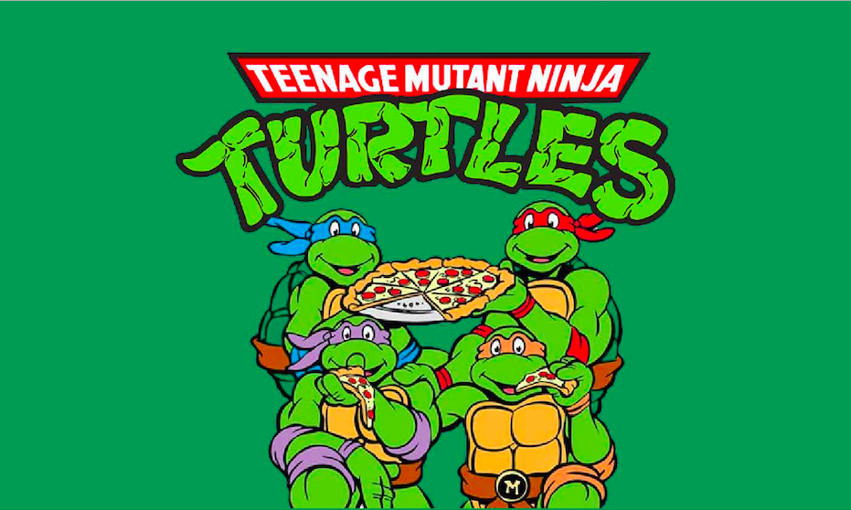
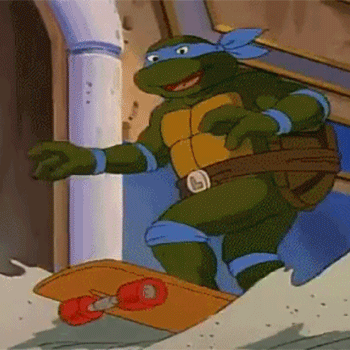
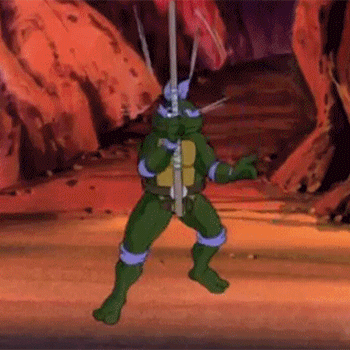
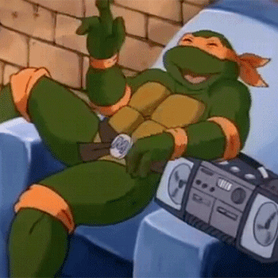
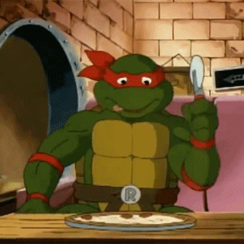

Leonardo
The tactical, courageous leader and devoted student of his sensei,
Leonardo wears a blue mask and wields two katana. As the most conscientious
of the four, he often bears the burden of responsibilty for his brothers,
which commonly leads to conflict with Raphael.
Leonardo was named after the Italian polymath, painter, engineer,
inventor, writer, anatomist, and sculptor Leonardo da Vinci.

Donatello
The scientist, inventor, engineer, and technological genius, Donatello
wears a purple mask and wields a bo staff. Donatellow is perhaps the least
violent turtle, preferring to use his knowledge to solve conflicts, but
never hesitates to defend his brothers.
Donatello is named after the early Renaissance Italian artist and sculptor
from Florence, Donatello.

Michelangelo
The stereotypical teenager of the team, Michelangelo is a free-spirited,
relaxed, and often goofy jokester, and known for his love of pizza.
Michelangelo wears an orange mask and wields a pair of nunchucks. He
provides the comic relief, though he still has an adventurous side. The
least mature of the four Turtles, he shows characteristics of a "surfer" type
and is often depicted with a Southern Californian accent.
He is named after the Renaissance painter, sculptor, architect, poet,
and engineer, Michelangelo.

Raphael
The team's bad boy, Raphael wears a red mask and wields a pair of sai.
He is physically very strong, has an aggresive nature, and seldom hesitates
to throw the first punch. He is often depicted with a very pronounced New York
accent. His personality can be fierce and sarcastic, and oftentimes delivers deadpan
humor. He is intensely loyal to his brothes and sensei.
He is named after the Italian painter and architect of the high Renaissance, Raphael.